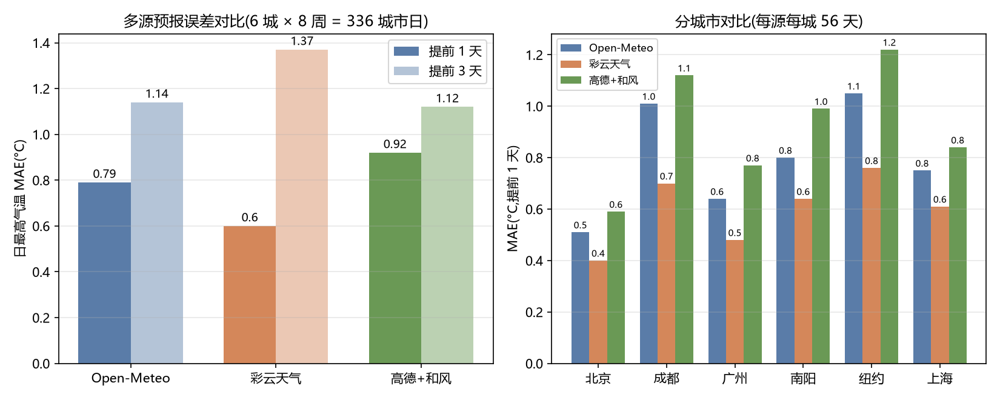

全链路
测多源采集
高德 / 彩云 / Open-Meteo / 和风四源互备,GPS→IP 定位降级;每日 00:10 CI 存档各源预报
校校准与对照
AQI 国标自算(HJ 633-2012)、时区对齐;GHCN 地面站对照参照、国标 AQI 每日同屏抽查
融数据驱动融合
按提前期对各源逆误差加权,融合明日/第三天气温;分歧超历史 p90 时挂警示角标
示可信呈现
来源徽章 / 误差带 / 源间点位图 / 分歧角标 / 语音播报(含可信度) / aria 语义
智AI 生活建议
Agnes→智谱四级模型链;数值接地校验(所有数字必须来自实测输入),失败降级规则版
数据驱动权重 融
由 live-compare 逐日误差生成(逆 MAE 归一化,按提前期分列)——彩云 t+1 最准、高德+和风 t+3 最稳,随每日 CI 数据滚动更新;前端融合直接消费本表,加载失败回退内置默认。
| 数据源 | MAE t+1 | MAE t+3 | w(t+1) | w(t+3) | 样本 |
|---|
预报精度指标 测
Open-Meteo Previous Runs「过去实际发布的预报」vs day-0 分析值,6 城 × 8 周回溯——7 天预报的误差带即来源于此。
多源与多模式对比 测·融依据
同一城市同一时段,不同数据源 / 数值模式的预报差异巨大——多源交叉验证与按提前期加权的必要性实证。
| 数据源 | MAE t+1 | MAE t+3 | POD / FAR | 样本 |
|---|
| 数值模式 | MAE t+1 | MAE t+3 | 系统性偏差 | POD | 样本 |
|---|
校准证据链 校
GHCN 地面站对照量化实况参照自身不确定性(参照与误差带同量级,指标相对结论稳健);国标 AQI 同屏对照每日 CI 自动记录。
| 城市 | GHCN 站 | 距离 | 重叠天 | Tmax 平均差 | Tmax MAE | 备注 |
|---|
AI 建议运行统计 智
12s 总预算;每个输出做数值接地校验,未通过即换下一模型,全链失败降级本地规则版。
证据图表 附件素材

图表文件不可达(独立部署包未含 tracker/reports)
多商业源误差对比(t+1 / t+3,6 城 × 8 周)